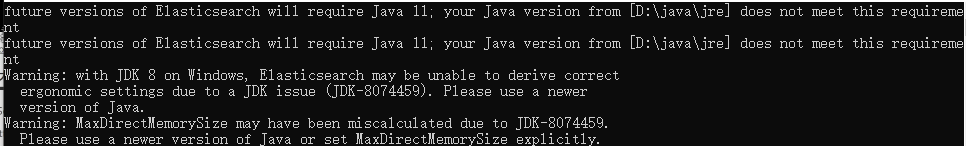
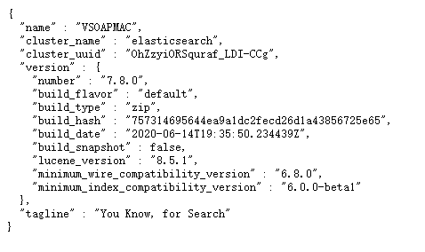
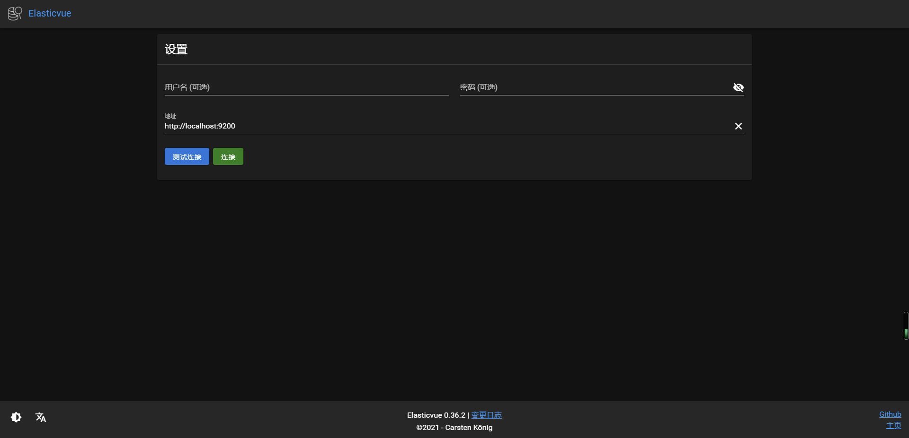
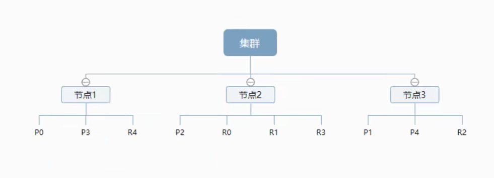

ElasticSearch快速入门
ElasticSearch（简称es）是一个基于Lucene的搜索服务器。它提供了一个分布式多用户能力的全文搜索引擎，基于RESTful web接口。ElasticSearch是用Java语言开发的，并作为Apache许可条款下的开放源码发布，是一种流行的企业级搜索引擎。ElasticSearch用于云计算中，能够达到实时搜索，稳定，可靠，快速，安装使用方便。官方客户端在Java、.NET（C#）、PHP、Python、Apache Groovy、Ruby和许多其他语言中都是可用的。根据DB-Engines的排名显示，ElasticSearch是最受欢迎的企业搜索引擎，其次是Apache Solr，也是基于Lucene。
ElasticSearch用途
- 快速和近乎实时地存储、搜索和分析海量的数据
- 为具有复杂搜索功能和需求的应用程序提供动力
安装
下载地址总结
官方：
- ElasticSearch：Download Elasticsearch Free | Get Started Now | Elastic | Elastic
- kibana：Download Kibana Free | Get Started Now | Elastic | Elastic
镜像网站：
- ElasticSearch: https://mirrors.huaweicloud.com/elasticsearch/?C=N&O=D
- logstash: https://mirrors.huaweicloud.com/logstash/?C=N&O=D
- kibana: https://mirrors.huaweicloud.com/kibana/?C=N&O=D
ElasticSearch安装
前提：
- java环境
- ElasticSearch的版本对应java的核心jar包。
- 安装node.js环境
下载
地址为：Download Elasticsearch Free | Get Started Now | Elastic | Elastic
根据自己的系统需求下载相应的压缩包即可
目录说明
- bin：用于启动软件
- config：配置文件
- log4j2：日志配置文件
- jvm.options：java虚拟机相关的配置
- elasticsearch.yml：elasticsearch的配置文件，默认9200端口，跨域
- lib：相关jar包
- logs 日志文件
- modules 功能模块
- plugins 插件，例如ik分词器等等
开始使用
双击bin/elasticsearch.bat的文件
若出现以下的提示，按回车键即可，不影响。

当出现started或者publish_address{127.0.0.1:9200}字样即是启动成功
测试是否成功
浏览器地址栏输入127.0.0.1:9200或者localhost:9200后回车。
出现以下字样证明es启动成功

安装可视化界面（Elasticsearch-head或类似）
笔者这里使用的是浏览器的扩展（比较方便），笔者主要用edge
- Chorme可以扩展商店去搜索Elasticsearch
- edge扩展商店下载Elasticvue即可
界面长这样：

连接
Elasticvue默认输入了地址，http://localhost:9200，链接即可
这里会有跨域问题，在es目录的config文件夹下elasticsearch.yml中输入以下配置即可：
http.cors.enabled: true
http.cors.allow-origin: "*"可以把es当做一个数据库，索引（数据库），文档（数据库中的数据），这个就是es的管理器（类似于sqlyog，数据库管理软件）
kibana
Kibana 是一个免费且开放的用户界面，能够让用户对 Elasticsearch 数据进行可视化。
官网：Kibana：数据的探索、可视化和分析 | Elastic
注意kibana的版本要和es的一致
这里是官方的下载地址：Download Kibana Free | Get Started Now | Elastic | Elastic
安装
下载解压即可
汉化
在kibana文件夹中的config文件夹下的kibana,yml修改配置如下：
i18n.locale: "zh-CN"运行
点击bin/kibana.bat，出现【http server running at http://localhost:5601】即打开成功
在浏览器输入http://localhost:5601，出现以下画面成功打开
ES核心概念
Elasticsearch是面向文档、关系行数据库。它有如下几大概念：集群，节点，索引，类型，文档，分片，映射。
| Relational DB | Elasticsearch |
|---|---|
| 数据库（database） | 索引（index） |
| 表（tables） | types（已过时） |
| 行（rows） | documents |
| 字段（columns） | fields |
物理设计：
elasticsearch在后台把每个索引划分成多个分片，每分分片可以在集群中的不同服务器间迁移。
逻辑设计：
一个索引类型中，包含多个文档，通过这个组合我们就能索引到某个具体的文档。
文档（documents）
elasticsearch中索引和搜索数据的最小档位是文档。它就是我们的一条条数据。
类型（类似于数据类型）
类型是文档的逻辑容器，类似于与String,int这种
索引（index）
类似于数据库，索引是映射类型的容器，elasticsearch中的索引是一个非常大的文档集合。索引存储了映射类型的字段和其他设置。然后它们被存储到各个分片上。
物理设计：节点和分片
一个集群至少有一个节点，而一个节点就是一个elasticsearch进程，节点可以有多个索引默认的，如果创建索引，那么索引将会有5个分片构成，每一个主分片会有一个副本。

elasticsearch使用的是倒排索引的结构。
倒排索引
在说倒排索引之前先说说什么是正排索引。正排索引也称为”前向索引”，它是创建倒排索引的基础。
这种组织方法在建立索引的时候结构比较简单，建立比较方便且易于维护;因为索引是基于文档建立的，若是有新的文档加入，直接为该文档建立一个新的索引块，挂接在原来索引文件的后面。若是有文档删除，则直接找到该文档号文档对应的索引信息，将其直接删除。
类似于线性表
优点：工作原理非常的简单。
缺点：检索效率太低，只能在一起简单的场景下使用。
倒排索引根据字面意思可以知道他和正序索引是反的。在搜索引擎中每个文件都对应一个文件ID，文件内容被表示为一系列关键词的集合（文档要除去一些无用的词，比如’的’这些，剩下的词就是关键词，每个关键词都有自己的ID）。例如“文档1”经过分词，提取了3个关键词，每个关键词都会记录它所在在文档中的出现频率及出现位置。
Rest风格详解
这是一种软件架构风格，而不是标准，知识提供了一组设计原则和约束条件。它主要用于客户端和服务器交互类的软件。基于这个风格设计的软件可以更简洁，更有层次，更易于实现缓存等机制。
| method | url地址 | 描述 |
|---|---|---|
| PUT | localhost:9200/索引名称/类型名称/文档id | 创建文档(指定文档id) |
| POST | localhost:9200/索引名称/类型名称 | 创建文档(随机文档id) |
| POST | localhost:9200/索引名称/类型名称/文档id_ update | 修改文档 |
| DELETE | localhost:9200/索引名称/类型名称/文档id | 刪除文档 |
| GET | localhost:9200/索引名称/类型名称/文档id | 查询文档通过文档id |
| POST | localhost:9200/索引名称/类型名称/_search | 查询所有数据 |
IK分词器
分词：把一段中文或者别的划分成一个个的关键字，我们在搜索的时候会把自己的信息进行分词，会把数据库中或者索引库中的数据进行分词，然后进行一个匹配操作，默认的中文分词是将每个字看成一个词，这很显然是不符合要求的，所以需要安装中文分词器ik来解决这个问题。
ik提供了两个分词算法：ik_smart和ik_max_word，其中ik_smart为最少切分，ik_max_word为最细粒度切分
下载
github：Releases · medcl/elasticsearch-analysis-ik · GitHub
安装
找到es的plugins文件夹，解压即可
注意重启es
可以通过elasticsearch-plugin list命令获取当前安装的插件，在bin文件夹中输入cmd，输入命令即可。
使用
打开kibana，进入控制面板（菜单，Management — Dev Tools）
第一个测试ik_smart
输入：
GET _analyze
{
"analyzer": "ik_smart",
"text": "计算机科学与大数据分析"
}
结果：
{
"tokens" : [
{
"token" : "计算机",
"start_offset" : 0,
"end_offset" : 3,
"type" : "CN_WORD",
"position" : 0
},
{
"token" : "科学",
"start_offset" : 3,
"end_offset" : 5,
"type" : "CN_WORD",
"position" : 1
},
{
"token" : "与",
"start_offset" : 5,
"end_offset" : 6,
"type" : "CN_CHAR",
"position" : 2
},
{
"token" : "大数",
"start_offset" : 6,
"end_offset" : 8,
"type" : "CN_WORD",
"position" : 3
},
{
"token" : "据分析",
"start_offset" : 8,
"end_offset" : 11,
"type" : "CN_WORD",
"position" : 4
}
]
}测试ik_max_word
输入：
GET _analyze
{
"analyzer": "ik_max_word",
"text": "计算机科学与大数据分析"
}
结果：
{
"tokens" : [
{
"token" : "计算机",
"start_offset" : 0,
"end_offset" : 3,
"type" : "CN_WORD",
"position" : 0
},
{
"token" : "计算",
"start_offset" : 0,
"end_offset" : 2,
"type" : "CN_WORD",
"position" : 1
},
{
"token" : "算机",
"start_offset" : 1,
"end_offset" : 3,
"type" : "CN_WORD",
"position" : 2
},
{
"token" : "科学",
"start_offset" : 3,
"end_offset" : 5,
"type" : "CN_WORD",
"position" : 3
},
{
"token" : "与",
"start_offset" : 5,
"end_offset" : 6,
"type" : "CN_CHAR",
"position" : 4
},
{
"token" : "大数",
"start_offset" : 6,
"end_offset" : 8,
"type" : "CN_WORD",
"position" : 5
},
{
"token" : "数据",
"start_offset" : 7,
"end_offset" : 9,
"type" : "CN_WORD",
"position" : 6
},
{
"token" : "据分析",
"start_offset" : 8,
"end_offset" : 11,
"type" : "CN_WORD",
"position" : 7
},
{
"token" : "分析",
"start_offset" : 9,
"end_offset" : 11,
"type" : "CN_WORD",
"position" : 8
}
]
}本博客所有文章除特别声明外，均采用 CC BY-SA 4.0 协议 ，转载请注明出处！